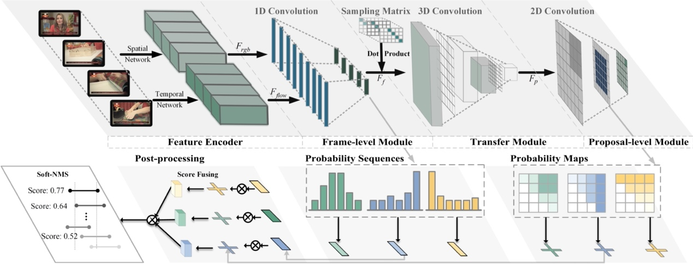
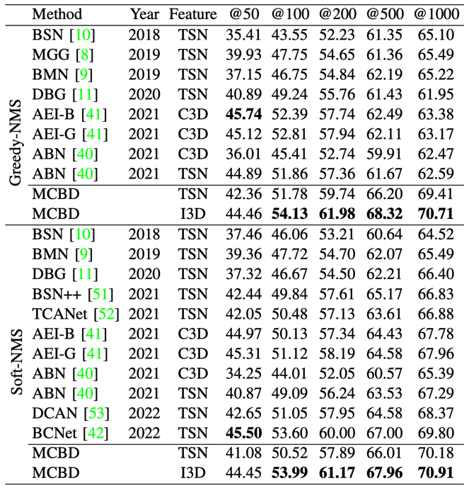
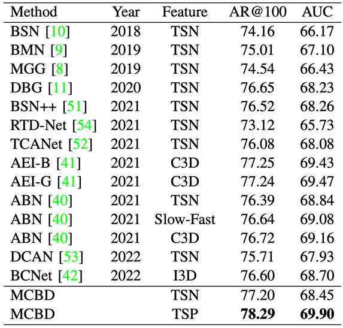
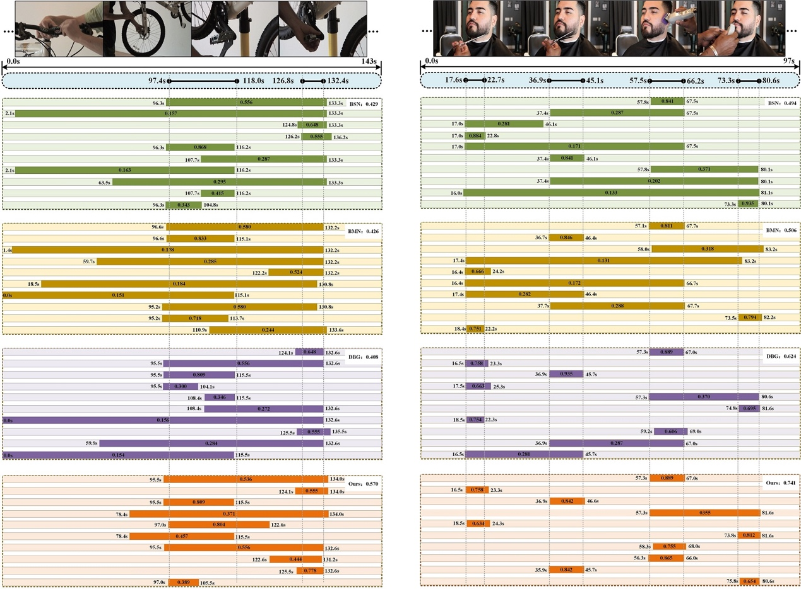
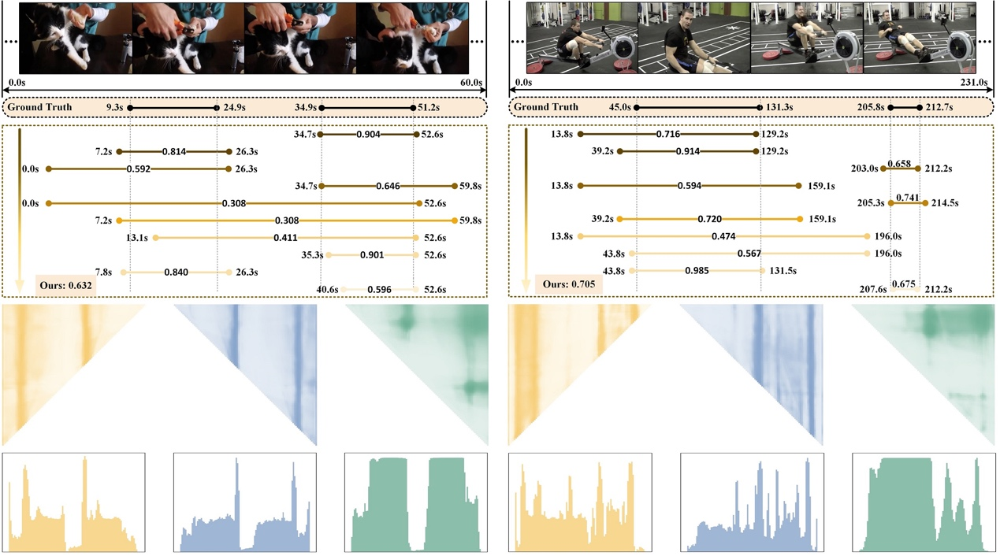

Multi-level Content-aware Boundary Detection for Temporal Action Proposal Generation
Taiyi Su, Hanli Wang, Lei Wang
Overview:
It is challenging to generate temporal action proposals from untrimmed videos. In general, boundary-based temporal action proposal generators are based on detecting temporal action boundaries, where a classifier is usually applied to evaluate the probability of each temporal action location. However, most existing approaches treat boundaries and contents separately, which neglect that the context of actions and the temporal locations complement each other, resulting in incomplete modeling of boundaries and contents. In addition, temporal boundaries are often located by exploiting either local clues or global information, without mining local temporal information and temporal-to-temporal relations sufficiently at different levels. Facing these challenges, a novel approach named multi-level content-aware boundary detection (MCBD) is proposed to generate temporal action proposals from videos, which jointly models the boundaries and contents of actions and captures multi-level (i.e., frame level and proposal level) temporal and context information. Specifically, the proposed MCBD preliminarily mines rich frame-level features to generate one-dimensional probability sequences, and further exploits temporal-to-temporal proposal-level relations to produce two-dimensional probability maps. The final temporal action proposals are obtained by a fusion of the multi-level boundary and content probabilities, achieving precise boundaries and reliable confidence of proposals. The extensive experiments on the three benchmark datasets of THUMOS14, ActivityNet v1.3 and HACS demonstrate the effectiveness of the proposed MCBD compared to state-of-the-art methods.
Method:
The pipeline of MCBD framework for temporal action proposal generation is shown in Fig. 1. The RGB and optical flow features are extracted by the two branches of two-stream feature encoder: spatial network and temporal network, separately. The proposed MCBD model has three main components: (1) a frame-level module which receives RGB and optical flow features as input, generates the frame-level features, and evaluates the corresponding start, end and content probabilities of each temporal location; (2) a transfer module which transforms frame-level features to proposal-level features through a fixed matrix sampling and then compresses the features; (3) a proposal-level module which further exploits temporal-to-temporal relations between proposal-level features and generates probability maps. In inference, the final scores of the temporal action proposals can be achieved by the fusion of multi-level boundary and content probabilities.

Fig. 1. Overview of the proposed MCBD framework.
Result:
The comparison results on THUMOS14 between MCBD and the state-of-the-art temporal action proposal generation methods are shown in Table 1. Since different redundant suppression methods affect the performance, normal Greedy-NMS and Soft-NMS are adopted. The temporal action proposal generation results on ActivityNet v1.3 are listed in Table 2.
Table 1. Comparison with state-of-the-art temporal action proposal generation methods on THUMOS14.

Table 2. Comparison with state-of-the-art temporal action proposal generation methods on ActivityNet v1.3.

Fig. 2 visualizes the results of the baseline models and MCBD on ActivityNet v1.3, where the proposals with the top-10 scores are illustrated in each video. Fig. 3 shows several visualization examples of temporal action proposals, probability sequences and maps generated by MCBD on ActivityNet v1.3.

Fig. 2. Visualization examples of temporal action proposals on ActivityNet v1.3.

Fig. 3. Visualization examples of temporal action proposals, probability sequences and maps generated by MCBD on ActivityNet v1.3.
Source Code:
Original illustration: image placeholderMCBD1.0.zip
Citation:
Please cite the following paper if you find this work useful:
Taiyi Su, Hanli Wang, Lei Wang, Multi-level Content-aware Boundary Detection for Temporal Action Proposal Generation, IEEE Transactions on Image Processing, vol. 32, pp. 6090-6101, Nov. 2023.